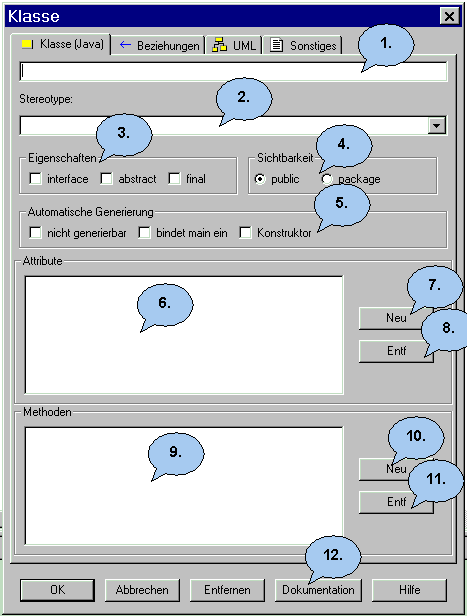
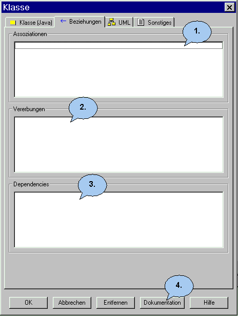
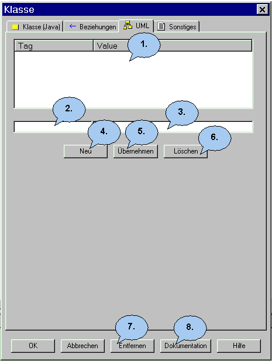
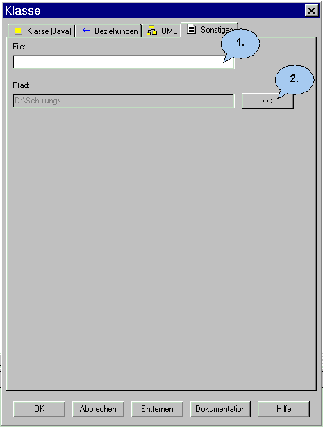

Der Klassen Dialog |
|
 1. Geben Sie hier den Namen der Klasse ein. Der Name darf keine Leerstelle und kein Sonderzeichen enthalten. Er sollte möglichst mit einem Großbuchstaben beginnen. 2. Hier können Sie einen Stereotype bestimmen. 3. Hier können Sie die Eigenschaften einer Klasse definieren ( nicht in C++ ). Es gibt die Auswahl zwischen: abstract: Diese Klasse muss von einer abgeleiteten
Klasse überschrieben werden. 4. Hier können Sie den Zugriff auf die Klasse festlegen. Sie haben die Auswahl zwischen: public: Die Klasse ist überall sichtbar. Jeder
hat Zugriff auf die Klasse. Standardmäßig ist public gesetzt. 5. Hier können Sie bestimmen, ob die Klasse überhaupt generierbar sein soll oder ob die main-Methode bzw. ein Konstruktor oder Destruktor ( nicht in Java ) automatisch generiert werden soll. Importierte JDK-Klassen sind grundsätzlich nicht generierbar. 6. Die Attribute der Klasse werden hier aufgelistet. Mit NEU kommen Sie in den Attribute Dialog. Mit ENTF können Sie das markierte Attribut entfernen, dann wird das Attribut nach einer nochmaligen Abfrage gelöscht. Durch einen Doppelklick auf das Attribut gelangen Sie in den Attribute Dialog dieses Attributs. 7. Legen Sie ein neues Attribut hier an. 8. Löschen Sie das markierte Attribut hier. 9. Hier werden die Methoden der Klasse aufgelistet. Mit NEU kommen Sie in den Methoden Dialog. Mit ENTF können Sie die markierte Methode entfernen, dann wird die Methode nach einer nochmaligen Abfrage gelöscht. Durch einen Doppelklick auf die Methode gelangen Sie in den Methoden Dialog dieser Methode. 10. Legen Sie eine neue Methode hier an. 11. Löschen Sie die markierte Methode hier. 12. Hier kommen Sie in den Doku-Dialog. 13. In dieser Registerkarte werden die Beziehungen der Klasse angezeigt.  1. Hier werden die Assoziationen angezeigt, egal ob die Klasse Anfangs- oder Endeklasse der Assoziation ist. 2. Hier werden die Vererbungen angezeigt, egal ob die Klasse Anfangs- oder Endeklasse der Vererbung ist. 3. Hier werden die Dependencies angezeigt, egal ob die Klasse Anfangs- oder Endeklasse der Dependency ist.
 1. Hier sehen Sie die bereits definierten Tagged Values. 2. Geben Sie hier den Namen des Tags ein. 3. Geben Sie hier den Wert des Tags an. 4. Hier können Sie einen neuen Tag anlegen. 5. Klicken Sie diesen Button, um Änderungen zu übernehmen. 6. Hier löschen Sie den ausgewählten Tagged Value.
 1. Hier können Sie den zur Klasse gehörenden Sourcecode-File angeben. 2. Hier können Sie den Pfad des Files auswählen.
|
Zurück zur Dialog Übersicht |
Zurück zur Startseite |